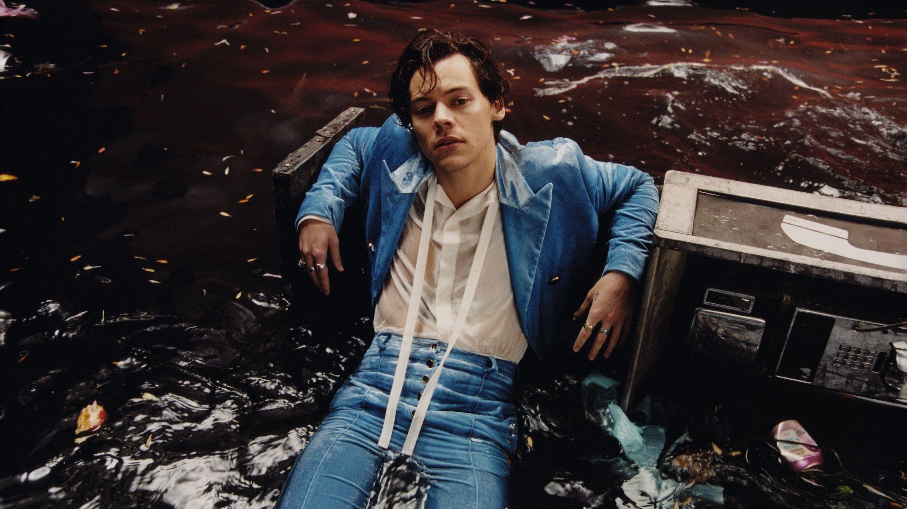

Harry Styles
Harry Edward Styles (Holmes Chapel, Cheshire; 1 de febrero de 1994) es un cantante, compositor y actor británico.
Inició su carrera como cantante en 2010 como integrante de la boy band One Direction, con la que participó en el programa The X Factor y quedó en tercer lugar.
Pese a no ganar, la agrupación firmó un contrato discográfico con el sello Syco, con el que publicaron los álbumes Up All Night (2011), Take Me Home (2012), Midnight Memories (2013), Four (2014) y Made in the A.M.(2015),
los cuales alcanzaron la primera posición en las listas de los más vendidos en numerosos países, entre estos los Estados Unidos y el Reino Unido, además de registrar altas ventas.
Luego de que One Direction anunciara un descanso indefinido, Styles inició su carrera como solista con la publicación de su álbum homónimo en 2017, el cual recibió buenos comentarios de la crítica y debutó en la cima de las listas de los principales mercados del mundo.
Del disco se lanzó como sencillo el tema «Sign of the Times», que llegó al puesto número 1 en el Reino Unido y al 4 en los Estados Unidos.
Gracias a dicha canción ganó su primer galardón en los premios Brit.
En 2019, lanzó su segundo álbum como solista, Fine Line, que tuvo buenas críticas y alcanzó la primera posición en varios países con récords
en ventas.Del álbum fueron lanzados como sencillos los temas «Lights Up» y «Adore You», que ingresaron al top 10 en el Reino Unido.
Asimismo, fue lanzado como sencillo «Watermelon Sugar», que se convirtió en su primera canción en alcanzar el número 1 del Billboard Hot 100 de los Estados Unidos y le valió el Grammy a la mejor interpretación de solista pop,así como su segundo premio Brit.
El cantante ha indicado que sus mayores influencias son las bandas The Beatles, Coldplay, el solista Elvis Presley
y el actor David Hasselhoff.
Por otra parte, el cantante ha dicho que sufre de ofidiofobia (miedo a las serpientes) y su lema es «trabajar duro, jugar duro, ser amable».Styles divide su tiempo entre dos casas en el norte de Londres,después de haber vivido en la zona de Sunset Strip en West Hollywood, California. Vendió su residencia en Los Ángeles, tras desilusionarse con laciudad.También posee un apartamento tipo loft en Manhattan.
